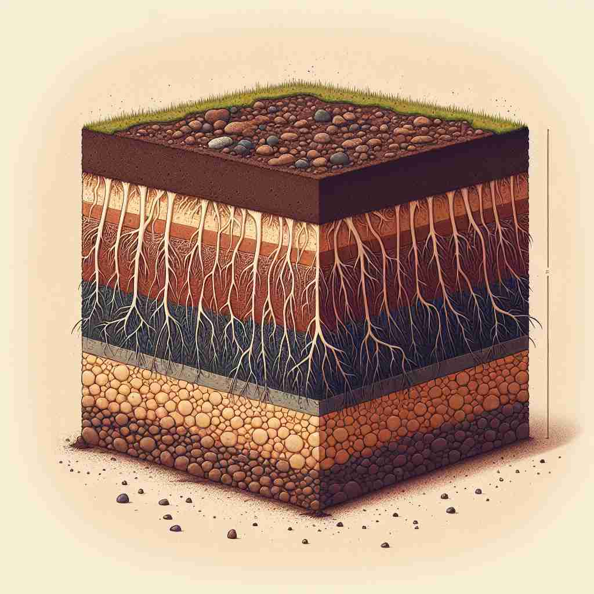

💬 The subsoil layer is important for plant roots to grow. 土壤下层对植物根系的生长非常重要。

💬 The gardener examined the subsoil layer to understand the soil composition. 园丁检查了土壤的底层，以了解土壤的成分。
💬 The subsoil layer is important for plant roots to grow. 土壤下层对植物根系的生长非常重要。
💬 The gardener examined the subsoil layer to understand the soil composition. 园丁检查了土壤的底层，以了解土壤的成分。
🧠 记住'subsoil'的关键是理解'sub-'（下面）和'soil'（土壤）的组合。想象一个土壤剖面，'subsoil'就是表土下面的那层。无论是作为名词描述这层土壤，还是作为动词表示深耕，或者作为形容词描述相关特征，都源于这个基本概念。通过visualizing一个分层的土壤结构，你可以轻松记住并理解这个词的各种用法。
🗝️ n. the layer of soil beneath the surface soil 表层土壤下方的土层
🎭 想象一个植物生长的花园。在地表之下，存在一层厚厚的土壤，这就是subsoil。它是植物根系向下生长并获取营养的地方，虽然不易看到，但对植物的成长至关重要。
💬 The subsoil in this area is rich in minerals. 该地区的底土富含矿物。
🌳 这个单词由前缀 "sub-"（下，次级）和词根 "soil"（土壤）组成，表示表层土下的土壤，即“底土”。
💡 记忆 "subsoil" 时，可以想到 "sub" 表示下方和 "soil" 土壤的结合，联想出土壤下的部分即为底土，这样更容易理解其含义。
🗝️ v. to plough or dig deep into the subsoil 翻耕或深入挖掘土壤下层
🎭 在一片广阔的农田中，农夫正在操作一台重型农机具，进行深翻作业。他正在努力plough，深入到subsoil中，翻动深层的土壤，以便更新养分并为下一季的播种做好准备。
💬 Farmers sometimes subsoil their fields to improve drainage. 农民有时会对他们的田地进行深耕，以改善排水。
🤔 从名词转化为动词，表示对下层土壤进行操作
🗝️ adj. relating to or characteristic of subsoil 与底土相关或具有底土特征的
🎭 在一个地质研究实验室，一组科学家正在分析不同地层的土壤样本。通过显微镜，他们观察到了subsoil特有的密度和矿物质特征，这些特征揭示了土地历史和肥力的信息。
💬 Subsoil water is an important resource for plants during dry periods. 地下水是干旱时期植物的重要资源。
🤔 名词转化为形容词，描述与下层土壤相关的特征